SudokuWiki.org
Strategies for Popular Number Puzzles
Rectangle Elimination
Released 14th Oct 2023
This is the first novel 'tough' strategy in a long time and replaces Empty Rectangles which I feel is an overly complicated pattern. Ken Reek from Denver, USA, sent me his explanation and it is included in his solver SudoKoach. I think it sufficiently distinct to warrant its own test and go near the start. The pattern can also be expressed with AICs usually with at least one grouped cell. For those curious I've kept the Empty Rectangle test on the solver so you can go back a step, untick Rectangle Elimination and compare.
Comments welcome.
I will use the original puzzle Ken sent to me to illustrate his pattern.
The pattern works on a single number - in this case 9.
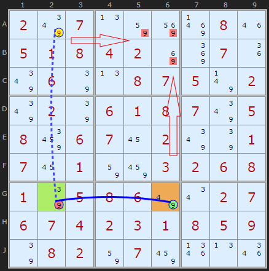
The base of the pattern consists of a Hinge cell G2 connected to the one remaining 9 in the row (or column), in this case G6. This part has to be a strong either/or link. First 'wing' cell in orange.
From the hinge G2 we look for another 9 in the opposite orientation (the column) and in a different box that is weakly linked - more than two 9s in the unit. The second 'wing' cell.
Consider the weakly-linked A2. If it's ON, then the other wing cell G6 must also be ON. However, this would eliminate ALL the 9s in the 'fourth corner box' (box 2, which is the fourth corner of the rectangle). So A2 cannot be ON, i.e. we can eliminate 9 as a possibility from A2. Simple as.
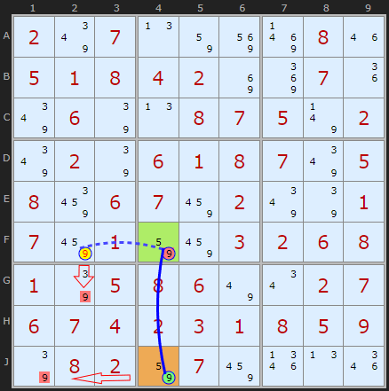
So it turns out there is a second Rectangle Elimination at this stage of the puzzle and my solver finds it before Ken's one - just because of the way I search for the hinge first and go from top-left to bottom-right.
If the 9 in F2 was ON it would remove the 9 in G2 - AND - it would turn OFF the 9 in F4 and turn ON the 9 in J4 - eliminating the 9 in J1.
Since we can't remove all the 9s in box 7 we have a contradiction assuming 9 in F2 can be a solution.
Multiple Eliminations
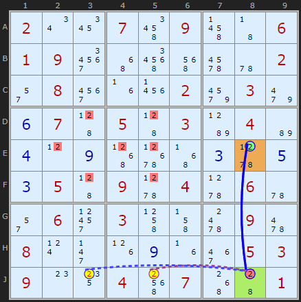
Double Rectangle Elimination
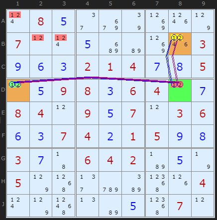
If +1[B8] then -1[D8] forcing +1[D1] which removes all 1s from box 1, so B8 cannot be 1
If +2[B8] then -2[D8] forcing +2[D1] which removes all 2s from box 1, so B8 cannot be 2
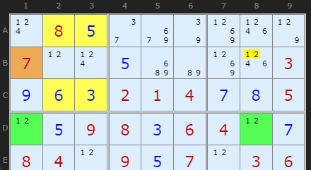
To show how this is also an Empty Rectangle I've displayed the pattern here.
Grouped X-Cycle
1 taken off B8. ERI=B1 + strong link on 1 between D1 and D8.
2 taken off B8. ERI=B1 + strong link on 2 between D1 and D8.
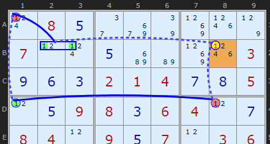
And to show how these are often expressible as Nice Loops I show that pattern here
Grouped X-Cycle
X-CYCLE on 1 - Discontinuous Alternating Nice Loop, length 6):
+1[B8]-1[D8]+1[D1]-1[A1]+1[B2|B3]-1[B8]
- Contradiction: When B8 is set to 1 the chain implies it cannot be 1 - it can be removed
Two Strong Links
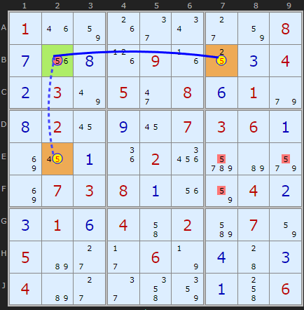
Another kind of double Rectangle Elimination is when both links are strong.
In this case the solver will return
If either +5[B7] or +5[E2] are ON then both are on because they are strongly linked through the hinge cell B2. If both are ON then this removes all 5s from box 6, so neither can be 5
This kind I find to be much, much rarer.
Note: The solver will always alternative strong/weak in a chain and draw the lines that way since it represents ON/OFF/ON etc. See here.
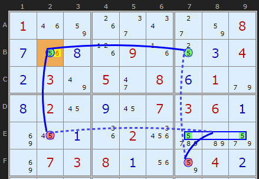
To give it's Nice Loop definition we have to use quite a complicated chain. It also works but discovering that B2 must be the solution rather than finding the wings are not. Two sides of the same coin but proves Rectangle Elimination is an easier pattern to find for a human.
X-CYCLE on 5 - Discontinuous Alternating Nice Loop, length 6):
-5[B2]+5[E2]-5[E7|E9]+5[F7]-5[B7]+5[B2]
- Contradiction: When 5 is removed from B2 the chain implies it must be 5 - other candidates 6 can be removed
This strategy is patched into the online solver - I have run tests to check my code and see how widespread it is. I have placed it between Y-Wings and Swordfish. On testing Ruuds top 50k test set I find 35,826 instances across 23,885 puzzles, so very high - but that is partly due to being at the front of the queue. I also found a small bug in the Empty Rectangles getting more instances, but that is moot now.
Rectangle Eliminations in Jigsaws
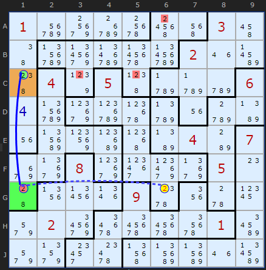
The fourth corner of this rectangle is C6 in the top-right most box. Before the solver would not find a Rectangle Elimination because it only searched for 2s in that box. The solver has now been updated to check all boxes since Jigsaws can go all over the place. I'm still looking for a 'box' that does not overlap with any of the other parts of the rectangle. The elimination is
Rectangle EliminationLoad the puzzle
If +2[G6] then -2[G1] forcing
+2[C1] which removes all 2s
from box 8, so G6 cannot be 2
Extended Rectangle Elimination
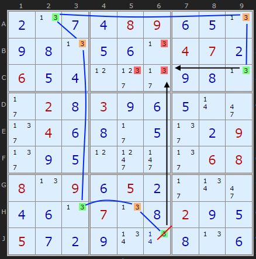
To the right is a puzzle where the 3 in J6 is in danger. Setting it ON will remove the 3s in the column in BC6. But there is another knock on effect. Going around the board (blue line) it also forces 3 on in C9 which would remove the last 3 in box 2 - C6. So from this we can deduce J6 cannot be 3.
This strategy is not currently in the solver but I hope to do so in a future release.
Using the diagonals in Sudoku X
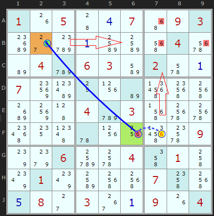
There is an easy to spot variation of Rectangle Elimination that uses the diagonals in Sudoku X puzzles - if there is a strong link between two specific candidates. This is the case for 6 between B2 and F2.
If B2 is the solution then it will remove the other 6s in row 5, at B7 and B9.
So we want to look at the other end for a 6 that will remove the final 6 in A7. That 6 is present on F7. If that were the solution it would force B2 to be the solution as well (via the strong link). So it follows F7 cannot be 6.
Exemplars
These puzzles have the most Rectangle Eliminations while still being less than or equal to diabolicals. 3 new ones added June 2025 (first three)
They make good practice puzzles.
They make good practice puzzles.
Comments
Email addresses are never displayed, but they are required to confirm your comments. When you enter your name and email address, you'll be sent a link to confirm your comment. Line breaks and paragraphs are automatically converted - no need to use <p> or <br> tags.
... by: sam
... by: Ed
I agree that searching for Rectangle Elimination is much easier to identify than than the over complicated Empty Rectangles. I do eliminate a lot of candidates using this search strategy.
I did wonder why you had placed Rectangle Elimination after Simple Colouring since it is much easier to search for Rectangle Eliminations than Simple Colouring. All of the Simple Colouring examples are easily solved if you identify the Rectangle Eliminations before searching for Simple Colouring candidate eliminations. Or was the search order just a matter of how much would need to be changed to modify the order since it is really the same as Empty Rectangles?
When you added Chutes Remote Pairs it was added before Simple Colouring since it was relatively easy to identify.
... by: Pandu R
If so, it might be worth saying this explicitly. The current language and UI suggests that ER is a subset of RE.
... by: Pandu R
The base of the pattern consists of a Hinge cell G2 connected to the one remaining 9 in the row (or column), in this case G6. This part has to be a strong either/or link.
From the hinge G2 we look for another 9 in the opposite orientation (the column) and in a different box that is weakly linked - more than two 9s in the unit. *** (The 'hinge' cell is highlighted in green, and the 'wing' cells are highlighted in orange.)
Consider the weakly-linked 'wing' cell A2. If it's ON, then the other wing cell must also be ON. However, this would eliminate ALL the 9s in the 'fourth corner box' (box 2, which is the fourth corner of the rectangle). So A2 cannot be ON, i.e. we can eliminate 9 as a possibility from A2.
---
P.S.: I don't think the sentence "These two 'wing' cells (in orange) are locked. If one is ON the other must also be ON" is correct. (At least, if it's correct, it's not obvious, and might need more explanation.) Yes, if A2 is ON then G6 is on. But if G6 is ON, I don't see why A2 must be ON.
... by: tim
The Swami explains this useful and simple elimination in Clear, Simple to Understand language with Clear, Concise illustrations.
... by: Shari A Tuttle
... by: Shari A Tuttle
... by: Nephrium
... by: Pieter Newtown
David H's Comment made me look closer into this strategy. Frankly I skip many Tough strategies and often go straight to X-Cycles which will find this too.
The statement "These two 'wing' cells are locked. If one is ON the other must also be ON" doesn't go both ways. If G6 is OFF then A2 is OFF is true, but in reverse, if G6 is ON then A2 is not necessarily ON due to the weak link from G2 to A2. If A2 is ON then G6 is ON would be true.
Also, as David pointed out, a typo for us proper English spellers, should be "fourth corner box".
Ciao, Pieter
P.S.
I could never get my head around Empty Rectangles anyway!
... by: David Harkness
"From the hinge G2 we look for another 9 in the opposite orientation (the column) and in a different box that is weakly linked - more than two 9s in the unit."
So far, so good.
"These two 'wing' cells are locked."
Which are the two 'wing' cells? A2 and G2? A2 and G6? G2 and G6?
"If one is ON the other must also be ON."
This doesn't apply to any two cells of A2/G2/G6, so is the other wing cell in box 2? This is the part where you lost me.
"And if G6 is OFF then A2 is OFF."
Yes.
Our weakly-linked 'wing' cell 9 can be eliminated if ALL the 9s in the forth corner box are turned OFF by the action of A2 and G6."
I think that's a typo and you meant "fourth corner box" (box 2). This part is also clear. I'm just left wondering which two cells are the 'wing' cells which both must be ON if either is ON. Am I misreading that part?
Cheers,
David
... by: Strmckr
Empty rectangle intersection is the easier explination for empty rectangles as a mini row col switch in any box. Where all the values for the box exist on these two mini sectors.
Extensions include the
Dual ER (2 arms off 1 box)
rec`t kite (er+kite) 1 box connects to 2 arms which are also weakly linked in another sector.
Mutiple eri connected
Muti-fish for multiple digits
I have examples if you want
Ps we use aic logic over niceloops as these have been discontinued since 2010 as well as anything colouring based. As the logic of aic is shorter and easier in many aspects.
Strmckr